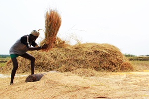
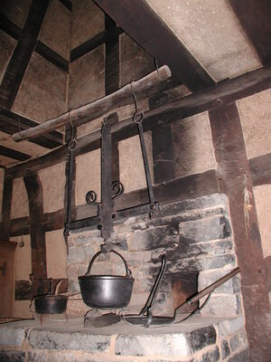

ϫⲏⲣⲉ SF, ϫⲉⲉⲣⲉ S, ϫⲏⲣⲓ B, ϫⲉⲣⲉ F nn f, threshing-floor: Jud 6 37 S (P 44 108, var ⲣⲉϫⲛⲟⲟⲩ) ἅλων صبرة (sic); C 41 53 B ϯ ⲕⲁϩⲓ ⲉϯϫ. ⲙⲫⲟⲣϣ ⲱⲓⲕ (Miss 4 413 يلقوا الطين only), J 10 36 S ⲧϫ. ⲙⲡⲧⲟⲡⲟⲥ, ib 20 55 S ⲧϫⲉⲉⲣⲉ ⲛⲧⲡⲉ ⲙⲡⲥⲁⲛⲡⲱⲥⲓⲟⲛ (συμπό.), ib 35 30 S ⲛⲧⲡⲉ ⲛⲧⲝⲇⲣⲁⲟⲩ (ἐξέδρα), ib 49 S ⲡⲣⲟ ⲛⲧⲉϫ., Ep 563 S ⲡⲕⲩⲕⲗ(ⲉⲩⲧⲏⲣⲓⲟⲛ) ⲛⲧϫ., BM 673 F sale of rooms (ⲗⲓ) & ⲛⲉⲩϫⲉⲣⲉ;corn threshed or season of threshing (cf ϫⲛⲟⲟⲩ): PLond 4 500 S ϫⲟⲩⲧⲁϥⲧⲉ ⲛⲉⲣⲧⲟⲃ ⲧⲁⲧⲁⲁⲩ ϩⲛⲧϫ. ⲉⲧⲛⲏⲩ, Bodl(P) e 48 S corn ⲉⲩϭⲱϣⲧ ϩⲁⲣⲟϥ ϩⲛϫ., BP 11349 S shall pay share ⲡⲣⲟⲥ ⲡϣⲁⲁⲣ ⲛϫ.;CMSS 78 F ⲧϫⲏⲣⲉ = ? ⲧϣⲉⲉⲣⲉ.Τχῆρε PMon 131 (var Τχρῆρε ib 121, PLond 5 170) may be this word; cf ? also PFior 1 no 65 μηχανῆς καλουμένης Τζήρας.
(noun feminine)
threshing-floor [αλων]
corn threshed or season of threshing
corn threshed or season of threshing



1: threshing-floor, 2: a round of threshing / corn threshed or season of threshing, 3: oven floor or hearth?
complete
782a
See also:
Homonyms:
| view | ⳉⲓⲧ, ⳉⲓⲉⲓⲧ A | (noun masculine) threshing-floor2069 |
| view | ϫⲛⲟⲟⲩ, ϫⲛⲁⲁⲩ, ϭⲛⲟⲟⲩ S ϭⲛⲱⲟⲩ B plural: ϫⲛⲟⲟⲩⲉ S | (noun masculine) threshing-floor, grain heaped there2426 |
Homonyms:
| view | ϫⲏⲣⲓ, ϫⲓⲛⲓⲣⲓ B | (noun masculine) filth [ρυπος]2445 |
| view | ϫⲓⲉⲓⲣⲉ S ϫⲓⲓⲣⲓ, ϫⲓⲛⲓⲣⲓ B | (noun masculine) pod of carob & of other plants2446 |
| view | ϫⲏⲣⲓ B | (noun) meaning uncertain3330 |